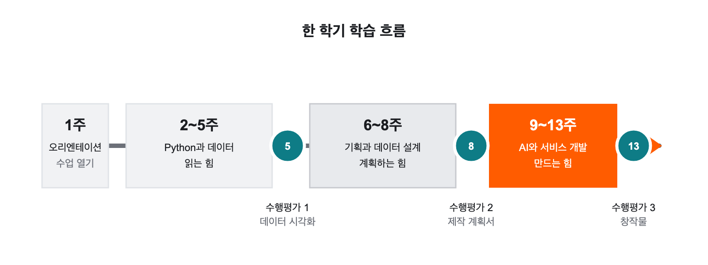

정보와
디지털 문해력信息与
数字素养
AI에게 맡기는 법이 아니라,
AI가 만든 것을 읽고 판단하는 법을 배웁니다.不是学着把事情交给 AI，
而是学读懂并判断 AI 所做之物。
강의자료课程资料
영어 소문자로 공백 없이 입력한 뒤 Enter를 누릅니다.用英文小写字连续输入，不要加空格，然后按 Enter。
교과서·PPT·실습 자료教材、PPT 与实践资料 1–4회
복습할 교과서를 열고, 수업 화면은 PPT로 다시 확인할 수 있습니다. 샘플이나 스타터가 공개된 주차에는 실습 자료 링크가 함께 표시됩니다.可打开教材复习，用 PPT 再看课堂画面。已发布示例或起始文件的周次会同时显示实践资料链接。
| 주차周次 | 교과서教材 | PPT | 실습 자료实践资料 |
|---|---|---|---|
| 1회 수업 소개와 수업 열기 | 교과서 01-1 교과서 01-2 | PPT 01-1 PPT 01-2 | — |
| 2회 도구 준비·숫자와 변수·웹과 언어의 역사 | 교과서 02-1 교과서 02-2 교과서 02-3 | PPT 02-1 PPT 02-2 PPT 02-3 | 학생용 자료 ZIP |
| 3회 비교·판단과 Python 환경 | 교과서 03-1 교과서 03-2 | PPT 03-1 PPT 03-2 | 샘플 안내 |
| 4회 그래프와 표 데이터 | 교과서 04-1 교과서 04-2 | PPT 04-1 PPT 04-2 | 샘플 안내 |
현재 배포된 자료만 링크로 표시합니다.这里只显示当前已经发布的资料链接。
교과서·PPT·실습 자료教材、PPT 与实践资料 5–8회
복습할 교과서를 열고, 수업 화면은 PPT로 다시 확인할 수 있습니다. 샘플이나 스타터가 공개된 주차에는 실습 자료 링크가 함께 표시됩니다.可打开教材复习，用 PPT 再看课堂画面。已发布示例或起始文件的周次会同时显示实践资料链接。
| 주차周次 | 교과서教材 | PPT | 실습 자료实践资料 |
|---|---|---|---|
| 5회 수행평가 1 | 교과서 05-1 교과서 05-2 | — | — |
| 6회 서비스 기획 | 교과서 06-1 교과서 06-2 | — | — |
| 7회 데이터베이스와 데이터 목록 | 교과서 07-1 교과서 07-2 | — | — |
| 8회 수행평가 2 | 교과서 08-1 교과서 08-2 | — | — |
현재 배포된 자료만 링크로 표시합니다.这里只显示当前已经发布的资料链接。
교과서·PPT·실습 자료教材、PPT 与实践资料 9–13회
복습할 교과서를 열고, 수업 화면은 PPT로 다시 확인할 수 있습니다. 샘플이나 스타터가 공개된 주차에는 실습 자료 링크가 함께 표시됩니다.可打开教材复习，用 PPT 再看课堂画面。已发布示例或起始文件的周次会同时显示实践资料链接。
| 주차周次 | 교과서教材 | PPT | 실습 자료实践资料 |
|---|---|---|---|
| 9회 사용자 흐름과 개발 계획 | 교과서 09-1 교과서 09-2 | — | — |
| 10회 API와 핵심 기능 | 교과서 10-1 교과서 10-2 | — | — |
| 11회 데이터 저장 | 교과서 11-1 교과서 11-2 | — | — |
| 12회 서비스 테스트 | 교과서 12-1 교과서 12-2 | — | — |
| 13회 수행평가 3 | 교과서 13-1 교과서 13-2 | — | — |
현재 배포된 자료만 링크로 표시합니다.这里只显示当前已经发布的资料链接。
읽기 전에 알아 둘 세 가지开读之前要知道的三件事
이 교과서는 수업 시간에만 보는 자료가 아닙니다. 수업 전에 미리 읽을 수도 있고, 수업이 끝난 뒤 다시 확인할 수도 있으며, 결석했을 때 혼자 따라올 수도 있도록 만들었습니다.这本教科书不只是课堂上用的材料。你可以课前预读，课后复查，缺课时也能自己跟上。
1. 세 가지 깊이 표시1. 三种深度标记
모든 내용을 똑같은 무게로 외울 필요는 없습니다. 각 부분에는 다음 표시가 붙어 있습니다.不必把所有内容都同等分量地记住。每一部分都带有下面的标记。
| 표시标记 | 뜻含义 | 평가评价 |
|---|---|---|
| 핵심核心 | 자기 말로 설명할 수 있어야 하는 내용必须能用自己的话说明的内容 | 평가에 포함计入评价 |
| 실습实践 | 안내를 보며 실행하고 수정할 수 있어야 하는 내용要能照着说明运行并修改的内容 | 평가에 포함计入评价 |
| 확장拓展 | “이런 것이 있다”는 정도로 알아 두면 되는 내용知道“有这么回事”即可的内容 | 공통 평가에서 제외不列入共同评价 |
확장拓展 표시가 붙은 부분을 건너뛰어도 다음 차시를 따라가는 데 문제가 없습니다. 궁금할 때 돌아와 읽으면 됩니다.跳过带 확장拓展 标记的部分，也不影响跟上下一课时。想知道时再回来读就行。
2. 모르는 낱말이 나오면2. 遇到不懂的词
처음 나오는 용어는 굵은 주황 글씨로 표시하고, 그 자리에서 현상 → 쉬운 설명 → 정확한 정의 → 경계 순서로 설명합니다. 낱말이 낯설어도 멈추지 말고 조금만 더 읽어 보세요.首次出现的术语用橙色粗体标出，并按现象 → 通俗说法 → 准确定义 → 边界的顺序解释。遇到生词也不要停下，再往下读一点即可。
3. 코드는 외우는 것이 아니라 읽는 것3. 代码不是拿来背的，是拿来读的
이 교과서에 나오는 코드는 통째로 외우라고 실어 놓은 것이 아닙니다. 코드가 나올 때마다 실행하기 전에 결과를 예상하고, 실행한 뒤 예상과 비교하고, 값을 하나 바꿔서 다시 확인하는 순서로 읽습니다.书里的代码不是让你整段背下来的。每次遇到代码，都按这个顺序读：运行前先预测结果，运行后与预测对照，改动一个值再确认一次。
AI가 코드를 대신 써 주는 시대에도 이 순서는 사라지지 않습니다. 오히려 AI가 만든 코드가 맞는지 판단하려면 이 순서가 더 필요합니다.即使在 AI 代写代码的时代，这个顺序也不会消失。恰恰相反，要判断 AI 写的代码对不对，更需要它。
AI는 코드를 만들 수 있지만, 무엇을 만들지 정하는 일과 만들어진 것이 맞는지 판단하는 일은 사람의 몫입니다.AI 能生成代码，但决定要做什么和判断做出来的东西对不对，是人的事。
본문에서 만나게 될 상자들正文里会遇到的方框
본문 사이사이에 여러 모양의 상자가 나옵니다. 모양마다 역할이 다르니 미리 익혀 두면 읽기가 훨씬 수월합니다.正文中会穿插各种样式的方框。每种样式作用不同，先认一遍会读得轻松很多。
차시마다 맨 앞에 놓입니다. 그 차시를 다 읽고 나서 이 질문에 답할 수 있으면 됩니다.放在每个课时的最前面。读完这一课时后，能回答这个问题就可以了。
본문을 이해하는 데 도움이 되는 보충 설명입니다.有助于理解正文的补充说明。
실수하기 쉬운 곳, 또는 잘못하면 되돌리기 어려운 곳입니다.容易出错的地方，或者一旦做错就难以挽回的地方。
본문에서 만나게 될 상자들正文里会遇到的方框(이어서)（续）
개인정보나 비밀정보처럼 절대로 하면 안 되는 일을 표시합니다.标出像个人信息、机密信息这类绝对不能做的事。
- 순서대로 따라 하는 실습입니다.按顺序照做的实践。
- 한 단계를 마치고 결과를 확인한 뒤 다음으로 넘어갑니다.做完一步、确认结果之后再进入下一步。
건너뛰어도 되는 내용입니다. 더 알고 싶을 때 읽으세요.可以跳过的内容。想多了解时再读。
중간중간 짧은 질문이 나옵니다. 해설 보기를 누르면 답과 이유가 함께 나옵니다.中间会出现一些短问题。点查看解析就会显示答案和理由。
차시 끝에서 그날 배운 것을 문장으로 다시 모읍니다.在课时末尾，把当天学到的内容再用句子收拢一遍。
한 학기 동안 어디로 가는가一个学期走向哪里
이 과목의 중심 주제는 AI를 활용한 창작입니다. AI로 할 수 있는 일은 여러 갈래인데, 이 수업은 그중 프로그램 만들기를 골라 연습합니다. 실행해 보면 맞았는지 틀렸는지가 드러나서, 확인하고 판단하는 연습을 하기에 가장 좋기 때문입니다. 그런데 창작을 바로 시작하지 않고 Python부터 배웁니다. 왜 그런지는 아래 흐름을 보면 알 수 있습니다.本科目的核心主题是用 AI 创作。用 AI 能做的事有好几类，这门课挑了其中做程序来练 —— 因为它一运行就见分晓，最适合练习确认与判断。但我们不马上开始创作，而是先学 Python。看下面的流程就明白为什么。

세 단계로 이어진다分三个阶段推进
한 학기 동안 어디로 가는가一个学期走向哪里(이어서)（续）
Python으로 값·조건·반복·함수를 읽고, 데이터를 그래프로 나타냅니다. 목표는 빨리 타이핑하는 것이 아니라 코드를 읽고 결과를 예상하는 것입니다.用 Python 读懂值、条件、循环、函数，并把数据画成图表。目标不是打字快，而是读懂代码并预测结果。
만들 서비스의 사용자·목적·핵심 기능을 정하고, 그 서비스가 기억해야 할 데이터를 설계합니다. 코드보다 문서를 먼저 만듭니다.确定要做的服务的用户、目的与核心功能，并设计它需要记住的数据。先做文档，后写代码。
계획서를 기준으로 AI와 함께 실제로 동작하는 웹서비스를 만들고, 시험하고, 설명합니다.以计划书为准，与 AI 一起做出真正能运行的网络服务，进行测试并加以说明。
왜 이 순서인가为什么是这个顺序
AI에게 “쇼핑몰 만들어 줘”라고 말하면 코드가 나옵니다. 문제는 그다음입니다. 그 코드가 무엇을 하는지 모르면 고칠 수도, 믿을 수도 없습니다. 화면이 예쁘게 나왔다는 것과 프로그램이 올바르게 동작한다는 것은 다른 이야기입니다.对 AI 说“给我做个购物网站”，代码就出来了。问题在之后。不知道那段代码在做什么，就既改不了，也信不过。画面好看，和程序运行正确，是两回事。
그래서 앞의 네 번은 코드를 읽는 훈련에 씁니다. 그리고 바로 개발을 시작하지 않고 6~8회에 무엇을 만들지 문서로 정합니다. 개발 시간에 주제를 처음 고민하면 만들 시간이 남지 않기 때문입니다.所以前四次用来训练读代码。而且不马上开始开发，第 6~8 次先用文档定下要做什么。因为到了开发时间才开始想题目，就没有时间真正做出来了。
수행평가 1(5회) — 데이터 시각화. 읽는 힘을 확인합니다.
수행평가 2(8회) — 서비스 제작 계획서. 코드가 아니라 문서를 냅니다.
수행평가 3(13회) — 바이브 코딩 창작물. 만드는 힘과 설명하는 힘을 함께 확인합니다.
모두 수업 시간 안에 진행하며, 평가는 이수·미이수로 매깁니다.实作评价 1（第 5 次） — 数据可视化，考查读的能力。
实作评价 2（第 8 次） — 服务制作计划书，交的是文档而不是代码。
实作评价 3（第 13 次） — Vibe Coding 作品，同时考查做出来和说明清楚的能力。
三次都在课堂时间内进行，评价记为通过·未通过。
전체 목차总目录 1부 · 2부第 1·2 部
13회 수업이 각각 두 차시로 나뉩니다. 앞 차시는 개념, 뒤 차시는 실습인 경우가 많습니다.13 次课各分为两个课时。通常前一课时讲概念，后一课时做实践。
- 1부 · 오리엔테이션 (1회)第 1 部 · 导论（第 1 次）
- 1-1수업 소개课程介绍무엇을 배우고, 어떻게 평가하며, 무엇을 약속하는가学什么、怎么评价、约定什么
- 1-2수업 열기开课‘computer’는 원래 사람이었다 — 하드웨어·운영체제·코딩·바이브 코딩“computer”原本是人 — 硬件、操作系统、编程、Vibe Coding
- 2부 · Python과 데이터 (2~5회)第 2 部 · Python 与数据（第 2~5 次）
- 2-1개발 도구 설치와 확인安装并确认开发工具Python·Node.js·OpenCode·VS Code를 설치하고 역할 확인安装 Python、Node.js、OpenCode 和 VS Code，并确认各自作用
- 2-2숫자와 변수로 계산하기用数字与变量进行计算숫자·print·변수·기본 산술연산으로 작은 결과 만들기用数字、print、变量和基本算术运算完成小结果
- 2-3웹과 프로그래밍 언어의 역사网络与编程语言的历史주소에서 시작해 인터넷·웹·서버와 프로그래밍 언어의 변화를 살펴보는 흐름从网址出发，了解互联网、Web、服务器与编程语言的发展历程
- 3-1비교 결과로 판단하기用比较结果进行判断값과 기준을 비교해 True·False를 예상하고 확인比较数值与标准，预测并确认 True·False
- 3-2프로젝트별 Python 환경과 자료구조分项目设置 Python 环境与数据结构uv·`.venv`·Jupyter 커널과 list·dict를 프로젝트 안에서 사용在项目中使用 uv、`.venv`、Jupyter 内核以及 list、dict
- 4-1Matplotlib으로 그래프 이해하기用 Matplotlib 理解图表질문에 맞는 그래프를 지정하고 원본·축·단위 확인指定符合问题的图表，并核对原数据、坐标轴与单位
- 4-2pandas로 표 데이터를 쉽게 사용하기用 pandas 轻松处理表格数据dict에서 DataFrame으로 이어 표·최댓값·지정 그래프 확인从 dict 连接到 DataFrame，确认表格、最大值与指定图表
- 5-1수행평가 1 안내实作评价 1 说明CSV, 제출물 구성, 데이터·AI 사용 원칙과 이수 기준CSV、提交物构成、数据与 AI 使用原则及通过标准
- 5-2수행평가 1 · AI 활용 데이터 시각화实作评价 1 · AI 应用数据可视化CSV 데이터로 그래프 하나를 만들고 해석해 제출한다用 CSV 数据做出一张图表并加以解读后提交
전체 목차总目录 3부第 3 部
6회부터는 만들 서비스를 문서로 계획합니다. 사용자와 문제를 정하고, 기억해야 할 데이터를 표로 옮겨 서비스 제작 계획서(PRD)를 완성합니다.从第 6 次起用文档规划要做的服务。定下用户与问题，把需要记住的数据整理成表，完成服务制作计划书（PRD）。
- 3부 · 서비스 기획과 데이터 설계 (6~8회)第 3 部 · 服务规划与数据设计（第 6~8 次）
- 6-1서비스 기획의 기초服务规划基础사용자·문제·핵심 기능과 만들지 않을 것 정하기确定用户、问题、核心功能，以及不做什么
- 6-2서비스 제작 계획서(PRD) 시작하기开始撰写服务制作计划书（PRD）아이디어를 하나 고르고 흐름·범위·화면을 문서로 옮기기选定一个创意，把流程、范围与画面写成文档
- 7-1관계형 데이터베이스의 기초关系数据库基础표·행·열·PK·FK·1:N·JOIN을 예시에서 알아보기从示例中认出表、行、列、主键、外键、1:N、JOIN
- 7-2PRD에 데이터 목록 덧붙이기给 PRD 补上数据清单내 서비스가 기억해야 할 것과 테이블 후보我的服务需要记住什么，候选数据表有哪些
- 8-1수행평가 2 안내实作评价 2 说明서비스 제작 계획서 — 무엇을 어떻게 제출하는가服务制作计划书 — 交什么、怎么交
- 8-2수행평가 2 · PRD 완성·제출实作评价 2 · 完成并提交 PRD기획과 데이터 설계가 서로 맞는지 검증하고 제출한다验证规划与数据设计是否彼此吻合后提交
전체 목차总目录 4부第 4 部
9회에 사용자 흐름을 설계한 뒤, 10회부터 AI와 함께 실제로 동작하는 창작물을 만들고, 테스트해서 고친 다음 제출합니다. 이 구간의 개발 조건은 별도 자료 9-0에 정리되어 있습니다.第 9 次设计用户流程，从第 10 次起与 AI 一起做出真正能运行的作品，再测试、修改，然后提交。这一段的开发条件整理在单独资料 9-0 里。
- 4부 · AI와 서비스 개발 (9~13회)第 4 部 · 与 AI 开发服务（第 9~13 次）
- 9-1서비스 사용자 흐름(Flow) 설계服务用户流程（Flow）设计사용자가 처음부터 결과까지 지나가는 길을 단계로 그린다把用户从开头走到结果的路，一步步画出来
- 9-2AI와 사용자 흐름·개발 계획 확정하기与 AI 一起确定用户流程与开发计划구현 가능성을 확인하고 범위를 조정해 개발 계획을 확정한다确认可实现性，调整范围，敲定开发计划
- 10-1API와 요청·응답 이해하기理解 API 与请求·响应사용자 행동이 요청·처리·응답으로 이어지는 방식을 읽는다读懂用户行动如何连到请求、处理与响应
- 10-2AI와 핵심 API 연결하기与 AI 连接核心 APIAI의 API 약속을 확인한 뒤 프로젝트 내부 기능 하나를 연결한다确认 AI 说明的 API 约定后，连接一个项目内部功能
- 11-1서비스가 데이터를 기억하는 과정服务记住数据的过程기록이 어디에 어떻게 남는지, 왜 다시 보이는지 이해한다弄懂记录存在哪里、怎么存，以及为什么还能再看到
- 11-2SQLite 데이터 저장 연결하기接上 SQLite 数据保存핵심 기능의 기록을 저장하고 다시 방문해 확인한다保存核心功能的记录，再次访问时加以确认
- 12-1사용자 흐름으로 서비스 테스트하기用用户流程测试服务시나리오를 만들고 예상한 반응을 먼저 적는다做出场景，并先写下预期的反应
- 12-2사용자 흐름 테스트와 시험 제출用户流程测试与试提交대표·예외·다시 방문 흐름을 실행해 보고 기록한다跑一遍代表流程、例外流程与再次访问流程并记录
- 13-1수행평가 3 · 테스트 결과 반영과 최종 가다듬기实作评价 3 · 反映测试结果并做最后打磨테스트 기록을 근거로 한 가지씩 고치고 재시험한다依据测试记录，一次改一处，改完再测
- 13-2수행평가 3 · 실행·설명·최종 제출实作评价 3 · 运行·说明·最终提交최종본을 실행하고 근거와 함께 설명한 뒤 제출한다运行最终版本，带着依据说明后提交